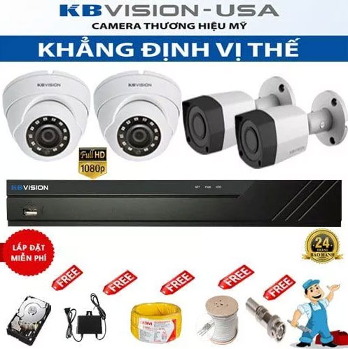
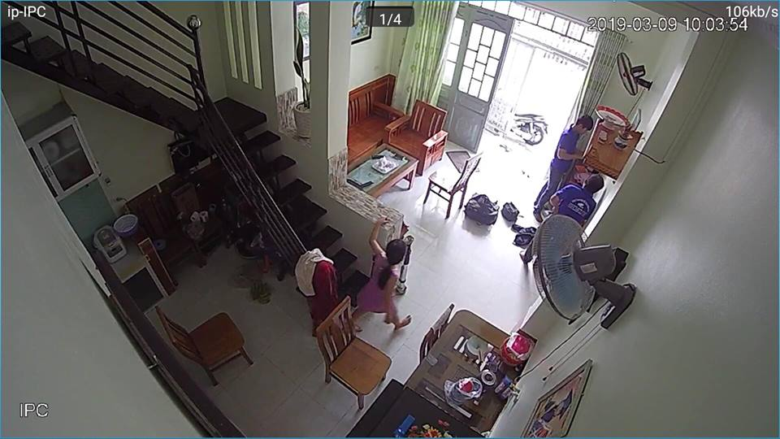
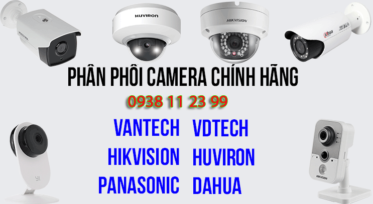

BÁO GIÁ LẮP CAMERA QUAN SÁT BÌNH THẠNH
Báo giá lắp camera quan sát Bình Thạnh của công ty camera An Thành phát sử dụng camera thương hiệu kbvision độ phân giải 2.0MP chất lượng hình ảnhh FULL HD 1080P đã bao gồm cài đặt xem qua mạng điện thoại. Báo giá sau đây là gói cơ bản thường sử dụng lắp Camera Quan Sát Bình Thạnh cho văn phòng, Cửa hàng và gia đình. Khách hàng có thể nâng cấp hệ thống phù hợp với nhu cầu của mình như. Thời gian lưu trữu, số lượng camera và chương trình khuyến mãi tị quận tận bình tùy theo từng thời điểm qua
Điện thoại 0938 11 23 99 để được tư vấn hổ trợ và khuyến mãi tốt nhất.

Trọn bộ camera quan sát Bình Thạnh bao gồm
- Đầu ghi hình camera quan sát 4 kênh, 8 kênh, 16 kênh phụ thuộc vào số lượng camera.
- Ổ cứng lưu trữ 250GB, dùng cho số lượng 4 camera và, 500 GB dành cho 5 đến 8 camera. và 1 TB dùng cho từ 9 đến 16 camera
- Số lượng camera cần thiết phụ thuộc vào số lượng của khách hàng.
- Tặng nguồn chuyển điện loại 1 có ổ định điện áp tương ứng số lượng camera
- Khuyến mãi phụ kiện, Jack đấu nối, đinh móc băn keo đủ để sử dụng
- Miễn phí nhân công lắp đặt camera tại Bình Thạnh 1 ngày
- Báo giá chưa bao gồm VAT khi khách hàng yêu cầu.
Giá lắp 1 Camera Quan Sát Bình Thạnh Kbvision : 3.000.000
Giá lắp 2 Camera Quan Sát Bình Thạnh Kbvision : 3.500.000
Giá lắp 3 Camera Quan Sát Bình Thạnh Kbvision : 4.000.000
Giá lắp 4 Camera Quan Sát Bình Thạnh Kbvision : 4.500.000
Giá lắp 5 Camera Quan Sát Bình Thạnh Kbvision : 6.000.000
Giá lắp 6 Camera Quan Sát Bình Thạnh Kbvision : 6.500.000
Giá lắp 7 Camera Quan Sát Bình Thạnh Kbvision : 7.000.000
Giá lắp 8 Camera Quan Sát Bình Thạnh Kbvision : 7.500.000
Giá lắp 9 Camera Quan Sát Bình Thạnh Kbvision : 10.300.000
Giá lắp 10 Camera Quan Sát Bình Thạnh Kbvision : 10.800.000
Giá lắp 11 Camera Quan Sát Bình Thạnh Kbvision : 11.300.000
Giá lắp 12 Camera Quan Sát Bình Thạnh Kbvision : 11.800.000
Giá lắp 13 Camera Quan Sát Bình Thạnh Kbvision : 12.300.000
Giá lắp 14 Camera Quan Sát Bình Thạnh Kbvision : 12.800.000
Giá lắp 15 Camera Quan Sát Bình Thạnh Kbvision : 13.300.000
Giá lắp 16 Camera Quan Sát Bình Thạnh Kbvision : 13.800.000

Thương hiệu camera quan sát HIKVISION tại Bình Thạnh là một trong những thương hiệu camera tốt nhất trên thị trường hiện nay, Sản phẩm camera HIKVISION được sử dụng trong nhiều dự án lớn tại Việt Nam. Giá thành rẻ, chất lượng tốt phù hợp với thị hiếu người Việt. An Thành Phát cung cấp nhiều giải pháp lắp camera quan sát cho khách hàng tại Bình Thạnh. Sử dụng công nghệ camera HDTVI cho hình ảnh lên đến độ phân giải 4K chuẩn nén hình ảnh h265+ tiêt kiệm dung lương lữu trữ hình ảnh camera giám sát. phù hợp cho những dự án lắp camera nhà xưởng tại Bình Thạnh cần lưu trữ lâu.
Lắp camera HIKVISION tại Bình Thạnh công ty An Thành Phát với giá rẻ sản phẩm camera ổn định giám sát qua điện thoại áp dụng công nghệ tiên tiến, HIKconect và tên miên camera. Camera quan sát HIKISION tại Bình Thạnh giá rẻ phù hợp cho kho hàng, cửa hàng gia đình và nhà xưởng, giá rẻ tiết kiệm chất lượng hình ảnh sắt nét giám sát ổn định qua điện thoại từ xa.

Lắp camera quan sát KBIVISON tại Bình Thạnh có tốt hay không ? có thể nói thương hiệu camera quan sát kbvision USA là một trong những thương hiệu đáng tin cây trong năm nay, hầu như những sản phẩm camera quan sát lắp đặt tại Bình Thạnh sử dụng camera KBVISION USA khách hàng rất hài lòng về chất lượng sản phẩm cũng như chính sách phục vụ của thương hiệu camera KBVISION.
Công ty camera An Thành Phát nhà phân phối chính thức thương hiệu camera KBVISION USA tại Bình Thạnh. công ty luôn có những chính sách phù hợp, chiết khấu cao và dịch vụ tốt nhất cho khách hàng khi lắp camera quan sát Bình Thạnh cho cửa hàng, văn phòng, gia đình, nhà xưởng, xưởng sản xuất và những công trình quy mô lớn tại Bình Thạnh. An Thành Phát luôn đưa ra những giải pháp lắp camera giá rẻ phù hợp tiết kiệm chi phí nhất cho khách hàng. Đảm bảo hệ thống camera quan sát tại Bình Thạnh luôn hoặt động ổn định chất lượng tốt.

Camera quan sát Vantech là một trong những thương hiệu camera hàng đầu tại Việt Nam, Vantech là thương hiệu Việt Chất lượng tốt Giá cả cạnh tranh. Lắp camera Vantech Bình Thạnh là lựa chon thương hiệu việt giá rẻ. Công ty camera An Thành Phát luôn mang đến khách hàng tại Bình Thạnh những giải pháp giám sát hiệu quả giá rẻ ổn định, Thương hiệu camera Vantech sở hữu nhiều công nghệ camera quan sát như, công nghệ AHD, Camera HDCVI, Camera HDTVI, Camera IP, và những công nghệ zoom soay, với giá thành hợp lý, phù hợp triển khai những dự án lớn tại Bình Thạnh như nhà xưởng, kho hàng , công trình giao thông nhà phố công cộng.
Lắp camera quan sát Vantech Bình Thạnh là lựa chọn thương hiệu camera Việt giá rẻ hình ảnh sáng đẹp. Vantech Việt Nam đã mở rộng sang một số thị trường camera quan sát Lào, Thái lan, campuchia với chất lượng sản phẩm tốt nhất giá rẻ hình ảnh sáng đẹp với giá thành rẻ. Lắp camera Bình Thạnh Vantech là giải pháp tiết kiệm.

Thương hiệu camera Dahua là một trong những thương hiệu camera tiên phong trong lĩnh vực camera quan sát an ninh. Lắp camera Dahua Bình Thạnh giá rẻ công ty An Thành phát , sử dụng công nghệ camera HDCVI cho hình ảnh sáng đep trung thực. truyền tải hình ảnh qua cáp đồng trục ổ định. Lắp camera Dahu Bình Thạnh giá rẻ ổn định giám sát cửa hàng kho hàng nhà xưởng, Thương hiệu camera Dahua Bình Thạnh sử dụng công nghệ cloud có server đặt tại việt Nam giúp giám sát qua điện thoại nhanh ổn định.
Dịch vụ lắp camera Bình Thạnh thương hiệu camera Dahua số 1 thế giới về giải pháp An Ninh, tích hợp nhiều công nghệ camera quan sát thương hiệu dahua. Với công nghệ night breaker công nghệ camera HDCVI, công nghệ camera IP đây l2 những công nghệ camera quan sát hàng đầu mà thương hiệu camera quan sát Dahua đang sở hữu bằng sáng chế. Việc lắp camera quan sát Bình Thạnh thương hiệu Dahua là một trong những lựa chọn đáng tin cây cho gia đình cửa hàng.
BÁO GIÁ LẮP CAMERA WIFI BÌNH THẠNH AN THÀNH PHÁT
- Lắp camera wifi Bình Thạnh cũng là một trong những lựa chọn tốt dành cho một sốt trường hợp như cửa hàng, gia đình, văn phòng. Camera wifi thường có nhiều mẫu và chức năng, có loại camera wifi vừ đi dây vừa hổ trợ wifi, có loại camera wifi xoay 360 độ hoặc có loại camera có góc rộng, tùy thuộc vào nhu cầu sử dụng để lựa chọn camera cho phù hợp tiết kiệm chi phí và có chất lượng tốt.
- Đa phần Lắp camera wifi tại Bình Thạnh hiện nay đều sử dụng công nghệ cloud và xem qua mạng bằng điện thoại là chủ yếu. do đó bạn cần quan tâm đến dịch vụ lắp camera wifi tại Bình Thạnh là chủ yếu. vì sẽ quyết định được tính ổn định để sử dụng camera wifi lâu dài, có dịch vụ lắp đặt sửa chửa tốt , hổ trợ tốt cho bạn trong quá trình sử dụng camera wifi tại Bình Thạnh.
- Khi nào sử dụng camera wifi ? Thông thường với số lượng sử dụng từ 1 đến 2 camera thì bạn nên sử dụng camera wifi để tiết kiệm chi phí và có nhiều chức năng như Đàm Thoại (Nghe và nói) nhỏ gọn và tiết kiệm chi phí.
MỘT SỐ DÒNG CAMERA WIFI NÊN LẮP TẠI BÌNH THẠNH
Lắp camera wifi tại Bình Thạnh KX-H1 Xoay 360 độ
- Ưu Điệm của dòng camera này là hình ảnh sáng đẹp, dễ sử dụng, kết nối camera qua điện thoại dễ dàng và dễ sử dụng. Góc nhìn rộng 80 độ Xoay 360 độ và xoay đứng 90 độ đây là ưu điểm của dòng camera này, Hồng ngoại hổ trợ ban đêm nhìn xa 20m sáng đẹp. Tặng thẻ nhớ lưu trữ 32 GB lưu được 4-5 ngày cho camera chất lượng HD bạn có thể giám sát đến 1/2 bán cầu với camera này , Thường sử dụng cho những sảnh lớn phục vụ giám sát quản lý.
-Lắp camera wifi cho Bình Thạnh tại Sảnh khách sạn, cửa hàng rộng tại Bình Thạnh hoặc văn phòng giám sát nhân viên tại các tòa nhà. Tiết kiệm chi phí hiệu năng cao khi lắp dặt 1 hoặc 2 camera xoay 360 độ. Bạn có thể chọn lưu trữ lâu hơn với thẻ nhớ nâng cấp đến 128 GB ( từ 20-30 ngày) Liên hệ tư vấn lắp camera wifi tại Bình Thạnh 0938 11 23 99.
Giá lắp 1 camera wifi Bình Thạnh Giá Rẻ: 1.600.000
Giá lắp 2 camera wifi Bình Thạnh Giá Rẻ: 3.300.000
Giá lắp 3 camera wifi Bình Thạnh Giá Rẻ: 4.500.000
Giá lắp 4 camera wifi Bình Thạnh Giá Rẻ: 6.000.000
 Hình ảnh thực tế lắp camera wifi KX-h1 Tại Quận Bình Thạnh với chất lượng HD, Giám sát chủ yếu qua điện thoại phù hợp lắp đặt những căn hộ cao cấp tại quận bình thạnh.
Để có thể đảm bảo an ninh cũng như có thể giám sát mọi hoạt động tại văn phòng hay cửa hàng và thuận tiện trong việc quản lý thì cần phải trang bị hệ thống camera giám sát, hệ thống này sẽ giúp bạn tăng cường an ninh, giảm rủi ro mất cắp, dễ quan sát và quản lý hệ thống cửa hàng và hỗ trợ rất nhiều trong việc kinh doanh của bạn.
Vì vậy việc lắp đặt camera Bình Thạnh là cần thiết và rất nhiều các công ty, xí nghiệp, cơ sở, cửa hàng kinh doanh đã nhận thấy hiệu quả của chúng khi sử dụng camera quan sát.
là một trong những công ty hàng đầu trong việc lắp đặt camera Bình Thạnh, với kinh nghiệm nhiều năm và đội ngũ kỹ thuật được đào tạo bài bản, chúng tôi sẽ lắp đặt hoàn thiện cho quý khách hàng trong thời gian nhanh nhất đồng thời đảm bảo về mặt chất lượng và hiệu năng khi sử dụng.
Ngoài ra chúng tôi nhận lắp đặt camera Bình Thạnh theo nhu cầu riêng biệt cho khách hàng và sẽ nhanh chóng đến tận nơi sửa chữa nếu có bất kỳ hư hỏng nào xảy ra trong quá trình vận hành, chậm nhất là 2h.
Đặc biệt chúng tôi chuyên phân phối các mặt hàng camera quan sát có công nghệ AHD, Camera HDCVI, Camera HDTVI, Camera IP mới nhất với độ nét rất cao về mặt hình ảnh và đạt chuẩn HD, không bị nhiễu cũng như tốc độ truyền tải dữ liệu nhanh vì vậy chất lượng hình ảnh vô cùng sắc nét.
Những sản phẩm camera do Vũ Dương cao cấp là hoàn toàn chính hãng điển hình như: Camera Panasonic, camera Paragon… đến những loại có trung bình và được dùng phổ biến như: Camera AVTech, camera Questech…
LIÊN KẾT LẮP CAMERA QUAN SÁT QUẬN 12 GIÁ RẺ UY TÍN.
LẮP CAMERA QUẬN 1 GIÁ RẺ 
Lắp camera quan sát quận 1 công ty An Thành Phát thường lắp đặt camera cho cửa hàng, văn phòng và nhà phố . sử dụng những camera quan sát thương hiệu tốt hoặt động ổn định, Hình ảnh chất lượng FULL HD 1080P có thệ giám sát từ xa hình ảnh HD công nghệ mới.
LẮP ĐẶT CAMERA QUẬN 2 
Lắp đặt camera quan sát tại quận 2 thường lắp những dự án căn hộ cao cấp sử dụng camera wifi có chất lượng tốt kết nối giám sát từ xa ổn định, đặt biệt những dự án lắp camera cho những khu biệt thự hình ảnh chất lượng tốt công nghệ FULL HD 1080P.
LẮP CAMERA QUAN SÁT QUÂN 3 
Lắp camera quan sát quận 3 giá rẻ sử dụng camera chính hãng lắp đặt cho những dự án như: shop thời trang, cửa hàng, nhà phố , với những dự án camera quan sát quận 3 chọn camera giá rẻ tiết kiệm phù hợp cho những điều kiện kinh doanh không ổn định cho cửa hàng.
LẮP CAMERA QUẬN 4 UY TÍN 
Công ty lắp camera quan sát tại quận 4 giá rẻ camera giám sát từ xa công nghệ mới sửa chửa lắp đặt camera quan sát giá rẻ tại quận 4 công nghệ mới chuyên lắp camera quan sát quận 4 chuyên lắp cho văn phòng giá rẻ chất lượng tốt, chuyên thi công camera văn phòng giá rẻ chất lượng.
LẮP CAMERA QUẬN 5 GIÁ RẺ 
lắp camera quan sát quận 5 giá rẻ tiết kiệm chi phí chọn công ty An Thành Phát là một trong những công ty camera uy tín sử dụng camera chính hãng giám sát từ xa ổn định, Thường lắp camera quan sát cho cửa hàng nhà phố công nghệ mới giám sát từ xa ổn định tiết kiệm.
LẮP ĐẶT CAMERA QUẬN 6 
Dịch vụ lắp đặt camera quan sát tại quận 6 giá rẻ sử dụng camera chính hãng chất lượng tốt, sử dụng camera quan sát chính hãng công nghệ HD giám sát qua điện thoại từ xa, Camera quan sát tại quận 6 An Thành Phát là một trong những công ty uy tín chuyên lắp caemra cho cửa hàng.
LẮP CAMERA QUAN SÁT QUẬN 7 
Lắp đặt camera quan sát quận 7 thường phục vụ cho những công trình camera quan sát cho căn hộ cao cấp, cửa hàng buôn bán, văn phòng đại diện và những trường học cao cấp giám sát quản lý từ xa, với nhiều năm kinh nghiệm lắp đặt camera quan sát An Thành Phát luôn phụ vụ tốt những công trình chuyên dụng.
CÔNG TY CAMERA QUẬN 8 
Lắp camera quan sát an ninh quận 8 đến thời điểm hiện tại An Thành Phát đã triển khai rất nhiều hệ thống camera giám sát nhà phố, camera giám sát sát khu phố với chất lượng hình ảnh sáng đẹp, thương hiệu camera tốt hàng đầu thế giới, An Thành Phát là công ty camera uy tín hàng đầu lắp đặt camera quan sát chính hãng giá rẻ
CAMERA QUẬN 9 GIÁ RẺ 
Lắp camera quan sát gia đình văn phòng tại quận 9 nên chọn công ty camera An Thành Phát là lựa chọn tốt camera quan sát công nghệ mới giá rẻ camera quan sát hình ảnh HD giám sát từ xa qua mạng điện thoại tại quận 9 chất lượng tốt giá rẻ .
LẮP CAMERA QUẬN 10 
Lắp đặt đặt camera quan sát giá rẻ tại quận 10 dịch vụ lắp camera quan sát cho cửa hàng giá rẻ uy tín sử dụng camera chính hãng chất lượng FULL HD phù hợp lắp camera quan sát cho cửa hàng khu vực quận 10 tiết kiệm chi phí giám sát từ xa ổn định.
LẮP CAMERA QUẬN 11 GIÁ RẺ 
Lắp dặt sử chửa bảo hành camera quan sát tại quận 11 uy tín giá rẻ camera giám sát qua mạng điện thoại từ xa ổn định, Công ty camera An Thành Phát chuyên thi công lắp đặt camera quan sát gia đình cửa hàng văn phòng và căn hộ tại khu vực quận 11 giá rẻ tiết kiệm chi phí giám sát ổn định.
LẮP ĐẶT CAMERA QUẬN 12 
Thi công lắp đặt camera quan sát tại quận 12 giá rẻ camera quận 12 công ty An Thành Phát thường thi công cho nhà xưởng, kho hàng và nhà vườn sử dụng camera có hồng ngoại giám sát tố, hổ trợ giám sát thiếu ánh sáng vẫn thấy màu đây là lựa chọn camera chất lượng giám sát ổn định qua điện thoại.
LẮP CAMERA BÌNH THẠNH 
Dịch vụ tư vấn lắp đặt camera quan sát uy tín khu vực quận Bình Thạnh giá rẻ sử dụng camera quan sát thương hiệu tốt kbvision, Dahua, hikvision giám sát qua mạng điện thoại từ xa ổn định kỹ thuật lắp đặt tận nơi bảo trì bảo hành 24 tháng.Giải pháp tiết kiệm chi phí giám sát từ xa ổn định là tiêu chí hàng đầu
LẮP CAMERA BÌNH TÂN GIÁ RẺ 
Với nhiều năm kinh nghiệm lắp camera quan sát cho nhà xưởng kho hàng trong khu vực quận bình tân, bộ phân kỹ thuật tư vấn giải pháp với nhiều năm kinh nghiệm luôn mang đến cho khách hàng những giải pháp tiết kiệm chi phí hoặt động ổn định giá rẻ sử dụng camera chính hãng.
LẮP CAMERA TÂN BÌNH 
Khu công nghiệp Tân Bình, khu dân cư cao cấp gân sân bay, chợ tân bình là những dự án lắp đặt camera quan sát quan trọng của An Thành Phát với tiêu chí giá rẻ và mang lại hiệu quả cao gân trụ sở công ty là một trong những lợi thế để bảo trì và dịch vụ sau bán hàng tốt nhất.
CAMERA QUAN SÁT TẠI HÓC MÔN 
Quận Hóc môn là một trong những quận huyên tốc độ phát triển cao lắp đặt camera quan sát tại Quận Hóc Môn cũng có nhiều lựa chọn trong đó An Thành Phát là một trong những công ty camera hàng đầu chuyên thi công lắp đặt camera chính hãng giám sát từ xa hổ trợ khách hàng tốt nhất tại Hóc môn củ chi, Công ty lắp camera tại hóc môn giá rẻ.
LẮP CAMERA TÂN PHÚ GIÁ RẺ 
Lắp camera quan sát quận tân phú là nơi tập trung nhiều công ty camera quan sát là quận đang phát triển chính vì vây thường sử dụng những sản phẩm camera giám sát an ninh gia đình, cửa hàng và văn phòng với giá rẻ và tiết kiệm chi phí, camera giám sát ổn định qua điện thoại máy tính từ xa, sử dụng camera quan sát chính hãng hình ảnh sắt nét.
LẮP CAMERA TẠI BÌNH DƯƠNG GIÁ RẺ 
lắp camera wifi tại bình dương giá rẻ tiết kiệm chi phí phù hợp cho gia đình văn phòng và cửa hàng sử dụng số lượng ít từ 1 hoặc 2 camera quan sát thì đây là giải pháp tiết kiệm chi phí, lắp camera wifi tại Bình Dương nhiều chức năng tiện dụng giám sát từ xa qua mạng điện thoại ổn định phù hợp với chi phí đầu tư.
CAMERA QUAN SÁT GÒ VÂP 
Lắp Đặt CAMERA Quan Sát Quận Gò Vấp nhanh và rẻ Nhất sử dụng camera quan sát chính hãng, Công ty chuyên lắp camera quan sát khu vưc gò vấp cho văn phòng gia đình cửa hàng, sử dụng camera quan sát công nghệ mới, lắp camera quan sát gò vấp tiết kiệm chi phí dịch vụ sau bán hàng tốt nhất, Camera quan sát sử dụng công nghệ mới giám sát ổn dịnh.
CÔNG TY LẮP CAMERA TẠI PHÚ NHUẬN 
Lắp camera quan sát quận phú nhuận giá rẻ , giải pháp camera quan sát cửa hàng nhà phố và văn phòng sử dụng camera quan sát chính hãng giá rẻ dịch vụ bảo hành sửa chửa camera quan sát tại quận phú nhuận uy tín nhanh chống và tiết kiệm chi phí cho khách hàng, Gọi Ngay 0938 11 23 99 để được tư vấn giải pháp lắp đặt camera quan sát phù hợp giá rẻ.
Khách Hàng Mới Trong Khu Vực Quận Bình Thạnh
- Lắp Đặt Camera Quan Sát Địa điểm lăp đặt camera 1b7 cư xá 304, p.25, Q, Bình Thạnh Sử dụng Dịch vụ camera quan sát Lắp 1 đầu ghi kx-7104sd6, 4 camera kx-2112c4, ổ cứng 250GB
- Khách Lắp Camera Anh huy Địa điểm lăp đặt camera Pack 6 vinhome.nguyen huu can,binh thanh Sử dụng Dịch vụ camera quan sát camera h2
- Khách Đặt Lắp Camera Địa điểm lăp đặt camera 561 dien bien phu,p 25 binh thanh Sử dụng Dịch vụ camera quan sát Yoosee 3rau khong lay the nho
- Lắp Camera Shop Đồ Đá Banh Địa điểm lăp đặt camera 232 Bình Quới, P.28, Q.Bình Thạnh Sử dụng Dịch vụ camera quan sát 1 ĐẦU GHI DS-7104HGHI-F1, 2 Cam DS-2CE56C0t-IRP, 1 Cam DS-2ce16d0t, ổ cứng 250gb
- Khách Lắp Camera Anh Khanh Địa điểm lăp đặt camera 192/27 Phan Văn Hân,Bình Thạnh Sử dụng Dịch vụ camera quan sát giao 2 camera KX-2003C4 ,2 nguồn (80k/cái)
 - Lắp Camera Địa điểm lăp đặt camera 56,duong d2,Phuong 25,Binh thanh Sử dụng Dịch vụ camera quan sát 1dum kbvision chuyển sang ahd
- Khách Đặt Lắp Camera A Tuyên Địa điểm lăp đặt camera 431 Xô Viết Nghệ Tĩnh, P.26, Q.Bình Thạnh Sử dụng Dịch vụ camera quan sát 1 đầu ghi KX-7104SD6, 1 cam KX-2111C4, 3 cam KX-2112C4, ổ cứng 500G
- Khách Lắp Camera Quan Sát Giao Hàng Địa điểm lăp đặt camera Lanmart2, 208 Nguyễn Hữu Cảnh, P.22, Q. Bình Thạnh Sử dụng Dịch vụ camera quan sát Giao 1 đầu ghi DH-XVR4108C-X1
- Lắp Camera MARHARYTA BOKHANAVA Địa điểm lăp đặt camera 59 Ngô Tất Tố, Chung Cư City Garden, Tầng 19, Phòng 02, Quận Bình Thạnh Sử dụng Dịch vụ camera quan sát 2 Camera KX-H2NW + the 32G
- Khách Lắp Camera Địa điểm lăp đặt camera 71c nguyen van lac, p. 19, q.binh thanh Sử dụng Dịch vụ camera quan sát 1 CAMERA KX-2012N2
- Khách Lắp Đặt Camera Địa điểm lăp đặt camera 758/28/2f xo viet nghe tinh,phường 26,quan binh thanh Sử dụng Dịch vụ camera quan sát Da hua,hau ghi 16,11con dum,4con co ghi am,o cung 3t
- Khách Lắp Camera Quan Sát Anh Phú Địa điểm lăp đặt camera 549/14/2 Xô Viết Nghệ Tĩnh, P. 26 Bình Thạnh Sử dụng Dịch vụ camera quan sát 1 đầu ghi KX-7108SD6, 2 cam thân 2111C4, 5 cam dome 2112C4, Ổ cứng 2TB
- Khách Lắp Đặt Camera anh huy Địa điểm lăp đặt camera chung cư vinhom park 2 , zone A, lầu 4 phòng 3 , phường 22 , quân Bình THạnh Sử dụng Dịch vụ camera quan sát 3 camera kx-H13WN - (3 thẻ nhớ)
- Lắp Camera Quan Sát công ty khánh an phát Địa điểm lăp đặt camera 602/51E, điện biện phủ, P 22, Q bình thạnh Sử dụng Dịch vụ camera quan sát 1 camera KW-WIN + thẻ nhớ 32GB
- Khách Lắp Camera Địa điểm lăp đặt camera 205A đường D2 ,QUẬN bình thạnh Sử dụng Dịch vụ camera quan sát mua tên miển 2 năm phiếu bảo hành
- Khách Lắp Camera Anh Hoàng Địa điểm lăp đặt camera 280/29/20/16 Bùi Hữa Nghĩa ,P2 , Bình Thạnh Sử dụng Dịch vụ camera quan sát 1 đầu ghi KX-7104SD6 , 2 camera thân KX-2111C4 ,HDD 250G
- Lắp Đặt Camera tedi Địa điểm lăp đặt camera 15A hoang hoa tham ,p6, q. binh thanh Sử dụng Dịch vụ camera quan sát 1 camera hIK (hik-2Q01EFD-IW)
- Khách Lắp Camera chi mai Địa điểm lăp đặt camera 59 ngo tat to,p.22, q. binh thanh Sử dụng Dịch vụ camera quan sát 1 camera kx-h13wn, the nho 128G
- Lắp Camera Quan Sát Công Ty Tedi Địa điểm lăp đặt camera 15A Hoàng Hoa Thám,P6 , Bình Thạnh Sử dụng Dịch vụ camera quan sát 1 đầu ghi DS-7104NI-Q1/M ,2 camera DS-2CV2Q01EFD-IW , ổ cứng
- Khách Lắp Camera Địa điểm lăp đặt camera chung cu pham viet chanh, q. binh thanh Sử dụng Dịch vụ camera quan sát 4 camera kb(kx-2111c4)